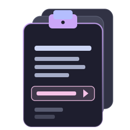

Theme
Choose how Clipman looks. The popup matches this setting automatically.
Color scheme
Dark uses Catppuccin Mocha; Light uses warm stone with brand accents.
Accent color for clip text
Applied to the primary text in clipboard rows. Reset with the default chip.
Layout
Window opacity
100 % keeps the popup fully opaque. Lower values let what's behind show through.
Font size
Affects clipboard content only — UI chrome stays legible regardless.
Show item count badges
Display counts next to each filter tab (All, Text, Images, Snippets).
Incognito mode
When on, Clipman ignores clipboard changes — nothing is recorded. Existing history stays untouched.
Pause recording
Toggle from the headerbar 🕶 icon for quick access during sensitive work.
Sensitive data
Clipman detects passwords, tokens, and credit-card-shaped strings, then auto-clears them after a delay. Sensitive clips appear as ••••••• in the list.
Auto-detect sensitive clipboard data
Patterns: passwords (from x11-clipboard mime), JWT/PEM, credit-card numbers, API tokens.
Auto-clear delay
How long before sensitive entries are removed from history.
Mask sensitive entries in list
Replace the preview with dots until you click the row.
Paste behavior
When I select a clip
"Auto-paste" simulates a keyboard paste into the focused app; "Copy to clipboard" leaves it for you to paste manually.
Auto-paste (Shift+Insert)
Global shortcut
The GNOME Shell extension binds this combination to toggle the popup. Changing it here updates the extension on the next daemon restart.
Toggle clipboard popup
Press the key combination, then click "Set". Escape cancels.
In-popup shortcuts
These work whenever the clipboard popup has focus. They aren't customisable (yet).
History
Clipboard entries are stored in a local SQLite database at ~/.local/share/clipman/clipman.db.
Maximum entries to keep
Older entries roll off when the cap is reached. Pinned items don't count.
Backup & restore
Export your history (clips, snippets, pins, settings) as a portable file. Restoring replaces the current database.
Export backup
Saves a .clipman.gz file you can store off-machine.
Restore from backup
Replaces all current history. You'll be asked to confirm.
Danger zone
Clear all history
Permanently delete every non-pinned clip. Pinned items and snippets are preserved.
Reset Clipman
Wipes everything — history, snippets, pins, settings. Use only as a last resort.
Update channel
Clipman checks for new releases via the GitHub API. The daemon polls at most once per 12 hours.
Check for updates automatically
Shows an in-app banner when a newer version is available. No telemetry is sent.
Current version
v1.0.6 — up to date · last checked 4 minutes ago
Package source
Installed via
Detected automatically. Updates flow through your package manager when possible.
snap (latest/stable)

Clipman
A clipboard history manager for Wayland
Version 1.0.6 · Apache-2.0
Acknowledgements
Built with GTK4 + libadwaita. Catppuccin palette by the Catppuccin community. Translations contributed by the community (see po/).